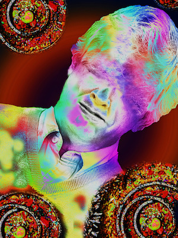

The Shepherd¶

The rainbow mind machine shepherd. credit
The shepherd's (pasteur) power manifests itself, therefore, in a duty, a task to be undertaken, so that - and I think this is also an important characteristic of pastoral power - the form it takes is not first of all the striking display of strength and superiority. Pastoral power initially manifests itself in its zeal, devotion, and endless application. What is the shepherd (berger)? Is (s)he someone whose strength strikes people's eyes, like the sovereigns or gods, like the Greek gods, who essentially appear in their splendor? Not at all. The shepherd is someone who keeps watch. (S)he "keeps watch" in the sense, of course, of keeping an eye out for possible evils, but above all in the sense of vigilance with regard to any possible misfortune.
- Michel Foucault, Security, Territory, Population: Lectures at the Collége de France (1977-1978)
what is the Shepherd?¶
The Shepherd is a very simple object.
The Shepherd is a data container for storing Sheep.
when does the Shepherd come in?¶
The first thing a bot flock needs is a set of keys. That's what the Keymaker is for.
Once the bot flock keys have been created with the Keymaker, the bot flock is started. To do that, the Shepherd initializes each Sheep with a corresponding JSON key file (created by the Keymaker).
how does the Shepherd tend to the Sheep?¶
In general, the Shepherd is a free-range parent, and lets the Sheep go off and do their own thing.
Note however, that in the spirit of extensibility, you can extend the Shepherd and Sheep classes to change the nature of your bot flock. (See next section.)
when and how do you extend the Shepherd?¶
The Shepherd class determines how much coordination happens among different Sheep in the flock and between the flock and the outside world (the Internet).
Let's look at some simple examples of when you would need to extend the Shepherd class, and what modifications would be required.
storing custom parameters¶
First, let's mention a feature of the Shepherd that makes adding new parameters to extended versions of the Shepherd class really simple.
The Shepherd constructor __init__() includes a
**kwargs argument at the end. This will create a
dictionary called kwargs with any key-value pairs
the user passed in. This is stored in self.params
at the end of the constructor:
self.params = kwargs
This means that if you create a new Shepherd class
like CarMechanicShepherd, and you need to pass in
(say) a boolean input parameter like uses_metric,
you don't have to explicitly modify the constructor
to take uses_metric as a parameter;
the Shepherd class automatically adds
a key uses_metric with a value True||False
to a dictionary self.params when you
call the constructor like
CarMechanicShepherd(uses_metric=False)
Okay, back to the regularly scheduled program...
webhook bot flock¶
As an example of a bot flock that requires tighter integration between the Shepherd and the Sheep, imagine you want to create a bot fock where the bots can be controlled with webhooks.
You would need the Shepherd to act as a central dispatcher and process incoming webhooks to determine which webhook payloads to pass on to which Sheep. But the Sheep also need to be modified to listen for instructions from the Shepherd.
To modify the Shepherd class, we would add a method that listens for incoming webhooks, and a method or methods implementing logic about which payloads to pass along to which Sheep (or to call the appropriate functions when webhooks trigger flock-wide actions).
To modify the Sheep class, we would add a listen() method
that would run forever - ideally in parallel with other
run-forever methods.
two bots per key flock¶
Suppose we wanted to build an argument bot flock. This bot flock would consist of pairs of Sheep that use Queneau generation to create dialogue, and that argue back and forth forever with each other.
This bot flock modifies the way that our Sheep coordinate with each other, which is an indication we should change the Shepherd class.
The Sheep bots we will use will work identically to a normal Queneau Sheep bot. Each bot generates dialogue from a single speaker, and tweets it in response to another bot tweeting.
While we can extend the Sheep class to make it easier to set fine grained controls over the dialogue process, we can use the existing inner-outer loop structure of Queneau bots to accomplish our goal.
So, Sheep do not require any extending.
The Shepherd class needs to be modified by changing the way it instantiates bots from keys. Instead of creating one bot per key, it should create two bots per keys.
(Note that the user will need to provide relevant details in the key or config dictionaries. For example, name and handle of both bot sides, inner/outer loop timing, etc.)
The -setup_keys() method will not change, because
we want to maintain the consistency of one key file
corresponding to one bot corresponding to one Twitter
account.
The _setup_sheep() method would be modified from
its current arrangement (pseudocode):
current _setup_sheep() method:
for json in list-of-all-json-files:
create new sheep from json
add new sheep to flock
to something more like (pseudocode):
new _setup_sheep() method:
for (bot1, bot2) in list-of-all-bot-pairs:
get key1 from keys
create bot1 from key1
get key2 from keys
create bot2 from key2
link bot1 and bot2
add bot1 and bot2 to flock
In this case, we want to have two Queneau Sheep that work almost exactly the same as normal Queneau Sheep, with perhaps a slight modification to make sure that each bot generates dialogue from a single speaker corresponding to their party in the argument.